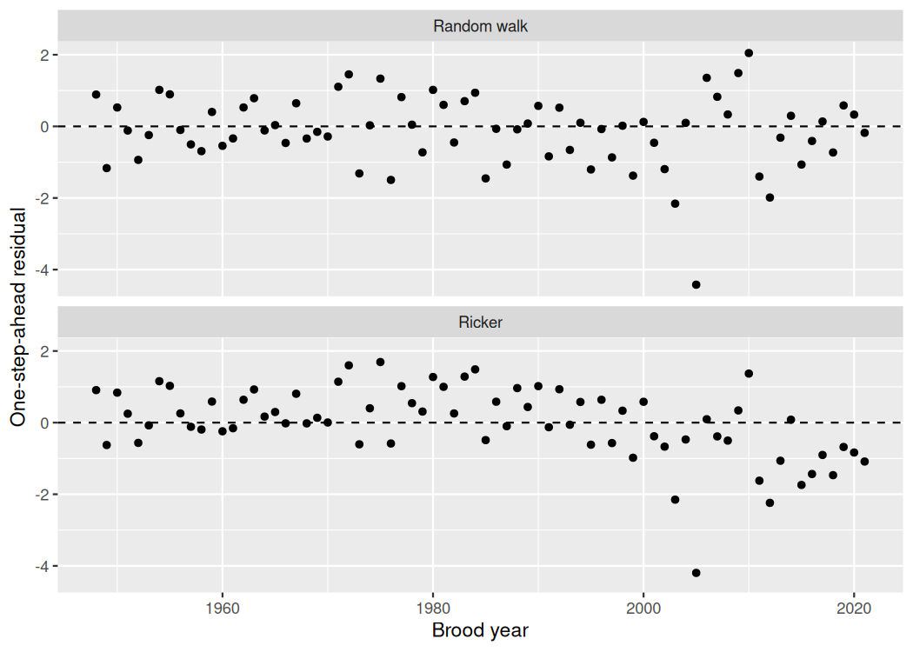

Checking a Model with Residuals
Last updated on 2026-11-25 | Edit this page
Estimated time: 45 minutes
Overview
Questions
- How do I know whether a model misses a pattern in the data?
- Why use one-step-ahead residuals?
Objectives
- Compute one-step-ahead residuals for any model in the lesson.
- Apply three residual checks: shape, pattern and independence.
- Identify what a model misses from the check it fails.
Starting Point
This episode opens step 6 of the Quick Start: checking the model against the data.
Run This Only If You Are Starting Here
If you have followed along in stellako.R, you already
have these objects: skip this chunk. If you are starting here or have
restarted R, run this chunk first. It needs
data/sockeye.csv and files/cookbook.R in your
project (see Setup).
R
library(RTMB)
library(dplyr)
library(ggplot2)
source("files/cookbook.R") # the finished recipe box (your my-recipes.R works too)
sockeye <- read.csv("data/sockeye.csv")
my_stock <- filter(sockeye, stock == "Stellako")
dat <- make_dat(my_stock, S_new = 50)
ricker <- fit_model(nll_ricker, start_ricker(dat), dat)
walk <- fit_model(nll_walk, start_walk(dat), dat, random = "log_alpha_year")
c(ricker = all(ricker$checks), walk = all(walk$checks))
OUTPUT
ricker walk
TRUE TRUE What a Good Residual Looks Like
Both Stellako models pass the four checks from Episode 4, so both fits can be used. The four checks ask whether the optimiser found the best values. They do not ask whether the model describes the data. A model can be fitted perfectly and still miss something important: the Ricker model, for example, assumes that productivity never changes. This episode checks each model against the data with residuals.
A residual is how far an observation is from what the model expected, on a standard scale. If the model describes the data, its residuals behave like independent draws from a standard normal distribution, the bell curve with mean 0 and standard deviation (SD) 1. That gives three things to check:
- the right shape: the residuals are bell-shaped, with no more extreme values than a normal distribution gives;
- no pattern: they do not rise or fall with brood year or with spawners;
- no memory: one year’s residual says nothing about the next year’s.
A one-step-ahead residual is each year’s surprise, given all the years before it, on a standard scale. For each brood year in turn, RTMB predicts log(R/S) from the fitted model and the years before that year. The residual is the distance from that prediction to the observation, divided by the prediction’s SD. A residual of -2 means that the year was two SDs below what the earlier years led the model to predict.
- For the Ricker, earlier years do not change the prediction, because productivity is the same in every year. Its residual is the observed minus the expected log(R/S), divided by sigma, the yearly scatter.
- For the random walk, earlier years tell the model where productivity has drifted to. The prediction for 2005 uses the observations up to 2004; the fixed parameters, such as sigma, were estimated from all years. Episode 11 goes further and refits the model to the earlier years only.
The yearly productivity used to predict 2005 is estimated from the years before 2005, not from 2005 itself, so the random effects cannot absorb the 2005 surprise. This is why one-step-ahead residuals work for models with and without random effects.
Open with the contrast: the four checks test the fit, residuals test
the model. Learners who know lm() expect residuals to be
“observed minus fitted”; say that for random-effect models these are too
small and not independent (misconception M8, in the optional spoiler
below), and that the lesson uses one kind of residual for every model.
This section takes about 3 minutes; do not explain how
oneStepPredict() computes the prediction beyond the two
bullet points.
Recipe: One-Step-Ahead Residuals
Use it when: you check any model.
Ingredients: a fitted model whose observations are marked with OBS(), with its rows in time order.
osa_residuals() packages the
oneStepPredict() line from the Quick Start, so that it
works for any model fitted with fit_model().
R
osa_residuals <- function(m) {
oneStepPredict(m$obj, method = "fullGaussian", trace = FALSE)$residual
}
my_stock$res_ricker <- osa_residuals(ricker)
my_stock$res_walk <- osa_residuals(walk)
round(c(mean = mean(my_stock$res_ricker), sd = sd(my_stock$res_ricker)), 2)
OUTPUT
mean sd
0.00 1.01 R
round(c(mean = mean(my_stock$res_walk), sd = sd(my_stock$res_walk)), 2)
OUTPUT
mean sd
-0.13 1.00 Read the function from the inside out:
-
oneStepPredict()finds the observations throughOBS()in the model function, and returns a table with one row per row of the data, in the same order; -
method = "fullGaussian"is exact when the data are normal and the random effects are normal and added to the expected log(R/S), as in every model in this lesson; -
trace = FALSEkeeps it quiet (other methods print their progress); -
$residualkeeps the residual column of that table.
The Ricker residuals have mean 0.00 and SD 1.01; the random walk’s have mean -0.13 and SD 1.00. Both are close to the 0 and 1 of a standard normal distribution. These two summaries cannot tell the models apart; the three checks in the next recipe can.
If osa_residuals() stops with
attempt to select less than one element in get1index, the
model function lacks the line logRS <- OBS(logRS) (see
Troubleshooting).
Check it worked: the residuals have a standard deviation near 1 (Ricker 1.01, random walk 1.00). Put up a green sticky note when both lines print.
Rows Must Be in Time Order
Each one-step-ahead prediction uses the rows above it in the data.
sockeye.csv is sorted by stock and brood year. Sort your
own data by year before you build the model, for example with
my_stock <- arrange(my_stock, brood_year). If the rows
are not in time order, the fit is the same, but a random-walk model’s
residuals no longer use the years before each year, and
lag1() pairs rows that are not neighbouring years. R gives
no warning.
For a model with random effects, the fitted yearly values have
already used each year’s observation, so ordinary residuals are too
small and are not independent from year to year, even when the model is
right. For the Stellako random walk, observed-minus-fitted residuals
have standard deviation 0.96 (instead of about 1) and lag-1 correlation
-0.17, against 1.00 and -0.10 for one-step-ahead residuals. The lesson
does not teach the observed-minus-fitted calculation: use
osa_residuals() for every model.
Recipe: Three Residual Checks
Use it when: you have one-step-ahead residuals.
Ingredients: the residuals as columns of
my_stock.
Each check answers one question: shape, pattern or independence.
Shape: are the residuals bell-shaped? A quantile-quantile (QQ) plot sorts the residuals from smallest to largest and plots each one against the value that a standard normal distribution would put in the same place (the expected quantile, on the x axis). Points on the line mean the normal distribution fits.
R
ggplot(my_stock, aes(sample = res_ricker)) +
stat_qq() +
stat_qq_line() +
labs(x = "Expected quantile (normal)", y = "One-step-ahead residual (Ricker)")

The points follow the line closely in the middle, but not at the ends. The few highest points lie a little below the line: the best years were not quite as good as a normal distribution would give. The lowest points also lie below the line: the worst years were worse than a normal distribution would give. The lowest of all, at -4.2, lies far below it.
The random walk lets productivity drift from year to year. Predict
before you run it: will the random walk’s QQ plot still have a point far
below the line? Write down yes or no. Then change
res_ricker to res_walk in aes()
and (Ricker) to (random walk) in the label,
and run the chunk again.
It does: the random walk’s lowest point is at -4.4, still far below
the line, although its other low points lie closer to the line than the
Ricker’s. filter() finds the year behind the lowest
point:
R
filter(my_stock, res_ricker < -3)
OUTPUT
stock management_unit brood_year spawners recruits res_ricker res_walk
1 Stellako Summer 2005 102.247 11.594 -4.196076 -4.421372It is brood year 2005 in both models: 102 thousand spawners produced only 11.6 thousand recruits. A slow drift in productivity cannot predict one sudden poor year.
Give learners a minute to write down their prediction before you run the random walk’s QQ plot. Many expect the random walk to remove 2005; it cannot, because productivity drifts slowly and 2005 was one sudden poor year. For scale: the lowest of 74 draws from a standard normal distribution is usually about -2.4, and a value as low as -4.2 turns up in about 1 series in 1000.
Pattern: does anything change with brood year or
spawners? Plot the residuals against brood year, and against
spawners. bind_rows() stacks the two models’ residuals into
one data frame, so that facet_wrap() can draw one panel per
model.
R
res_long <- bind_rows(
data.frame(model = "Ricker", brood_year = my_stock$brood_year, residual = my_stock$res_ricker),
data.frame(model = "Random walk", brood_year = my_stock$brood_year, residual = my_stock$res_walk))
ggplot(res_long, aes(x = brood_year, y = residual)) +
geom_hline(yintercept = 0, linetype = "dashed") +
geom_point() +
facet_wrap(~ model, ncol = 1) +
labs(x = "Brood year", y = "One-step-ahead residual")

The bottom panel is the plot from the Quick Start: the Ricker residuals are mostly above zero before 1990 and mostly below zero after 2000. The random walk’s residuals in the top panel cross zero often, with no long runs above or below it.
R
ggplot(my_stock, aes(x = spawners, y = res_ricker)) +
geom_hline(yintercept = 0, linetype = "dashed") +
geom_point() +
labs(x = "Spawners (thousands)", y = "One-step-ahead residual (Ricker)")

Against spawners there is no clear curve: the points scatter around
zero. Six of the seven years with more than 105 thousand spawners are
above zero, but they are too few to judge; Episode 9 compares the Ricker curve
with the Beverton-Holt curve. Change res_ricker to
res_walk in aes() and (Ricker) to
(random walk) in the label to check the random walk: its
points also scatter around zero, with no clear curve.
Independence: are neighbouring years alike? The lag-1 correlation from the Quick
Start is the correlation between each year’s residual and the next
year’s. In lag1(), head(r, -1) is every
residual except the last and tail(r, -1) is every residual
except the first, so cor() pairs each row with the next row
(with missing years, the next row is not always the next year).
Residuals with no memory still give a lag-1 correlation a little
different from zero, by chance. With n years, it usually stays between
-2/sqrt(n) and +2/sqrt(n), so that is the limit.
R
lag1 <- function(r) cor(head(r, -1), tail(r, -1)) # neighbouring years alike?
c(ricker = lag1(my_stock$res_ricker), walk = lag1(my_stock$res_walk),
limit = 2 / sqrt(nrow(my_stock)))
OUTPUT
ricker walk limit
0.2503649 -0.1001520 0.2324953 The rule: a lag-1 correlation between -limit and +limit is consistent with no memory. With 74 years the limit is 0.23. The Ricker’s 0.25 is above it, so the Ricker fails this check; the random walk’s -0.10 is inside it, so the random walk passes. The Ricker’s value is only slightly above the limit, so on its own it would be weak evidence; the long runs in the pattern plot point the same way.
Check it worked: you can say for each check whether each model passes. Put up a green sticky note when you have the plots and the three numbers 0.25, -0.10 and 0.23.
Ask for sticky notes after the lag-1 numbers print; this recipe takes
about 12 minutes. Type the three checks as three separate chunks and
name each check aloud as you go: shape, pattern, independence. Learners
can make the change to res_walk in the spawner plot on
their own. If learners notice that the random walk’s recent residuals
are more spread out (for your information: without 2005, their SD is
0.78 before 1990 and 1.11 after 2000), say that a change in spread is
also a pattern; every model in this lesson keeps sigma constant, so note
it as a caveat in row 5 or row 10.
Challenge 1: What Does the Lag-1 Correlation Say? (3 minutes)
The Ricker residuals have lag-1 correlation 0.25 with 74 years (limit 0.23). What does this suggest?
- (a) Good years tend to follow good years: the model misses something that persists.
- (b) The residuals are not normal.
- (c) The fit failed: refit from other starting values.
- (d) The data contain an error.
(a). A positive lag-1 correlation means that a year above zero tends to be followed by another year above zero, and a year below by another below. Something that lasts from one year to the next, such as productivity, is not in the model.
- (a) is right.
- (b) confuses independence with shape. Residuals can be perfectly normal and still have memory; the QQ plot checks shape.
- (c) confuses the model with the fit. All four checks passed, so the optimiser found the best values; the residuals show what the model leaves out.
- (d): one wrong value would not make neighbouring years alike across the whole series.
If many learners choose (b), point at the QQ plot (shape) and the lag-1 number (independence) side by side, and say that each check answers a different question. If many choose (c), point back to the TRUE values in the Starting Point output: the fit worked, and residuals test the model, not the fit. If answers are spread out, go back to the pattern plot: the long runs above and below zero are what the lag-1 number measures.
Reading the Three Checks Together
Put the results of the three checks side by side, one column per model.
| Check | Ricker | Random walk |
|---|---|---|
| Shape | close to the line in the middle, both ends a little below; 2005 far below (-4.2) | close to the line, the highest few a little below; 2005 far below (-4.4) |
| Pattern over time | mostly above zero before 1990, below after 2000 | no long runs |
| Pattern against spawners | no clear curve | no clear curve |
| Independence (limit 0.23) | 0.25, slightly above the limit: fails | -0.10: passes |
In short: the Ricker misses the change in productivity; the random walk does not. Both have one extreme year.
A failed check names what the model misses. The Ricker fails two checks, the pattern over time and independence, and both point to the same thing: productivity that changes over time. Episode 6 let productivity drift, and the checks show that letting productivity drift removes both problems.
When more than one check fails, deal with the pattern over time first: a pattern that the model misses can also bend the QQ plot. The table below is the general rule.
| Check that fails | What the check shows | What the model misses | What to try |
|---|---|---|---|
| Shape | points far from the line at one or both ends | more extreme years than a normal distribution allows | first fix any pattern over time and draw the QQ plot again; if the ends still bend, check those years in the data, keep them and report them; then try a distribution with heavier tails, one that expects an occasional extreme year (Going Further) |
| Pattern over time | long runs above or below zero | something that changes over time | let a parameter drift (Episode 6) or add a covariate (Episode 9) |
| Pattern against spawners | a curve or a slope | the shape of the curve is wrong | another curve, such as the Beverton-Holt (Episode 9) |
| Independence | lag-1 correlation above the limit | something that persists from year to year | as for a pattern over time |
Residual Checks Are Evidence, Not Verdicts
The lesson uses plots and one number, not formal tests: with many years, tests flag tiny departures. Note an extreme year and report it; do not remove it.
For your information only, not for the learners: Shapiro-Wilk p-values for the Stellako residuals are 0.0009 (Ricker) and 0.003 (random walk). Both are driven by 2005: with the 2005 residual left out they are 0.26 and 0.98. If a learner asks for a test, say that the QQ plot shows the same thing and also shows which year causes it.
Challenge 2: Your Turn: Upper Pitt River, Row 5 (14 minutes)
Run the three checks (shape, pattern over time and independence) for
the Upper Pitt River Ricker and random-walk models. Which checks does
each model pass? Add the code to upper-pitt-river.R and
write row 5 of your report card under it. Row 5 records these three
checks; the plot against spawners is optional.
Copy the recipe chunks in order and change three names:
my_stock to pitt, res_long to
res_long_pitt, and the fitted models in
osa_residuals(ricker) and osa_residuals(walk)
to ricker_pitt and walk_pitt. If
ricker_pitt and walk_pitt are not in your
workspace, run upper-pitt-river.R from the top: it has them
from Episodes 4 and 6. For the random walk’s QQ plot, change
res_ricker to res_walk and
(Ricker) to (random walk), as you did for
Stellako.
Fit both models, check the fits, and compute the residuals and the lag-1 correlations:
R
pitt <- filter(sockeye, stock == "Upper Pitt River")
dat_pitt <- make_dat(pitt, S_new = mean(tail(pitt$spawners, 4)))
ricker_pitt <- fit_model(nll_ricker, start_ricker(dat_pitt), dat_pitt)
walk_pitt <- fit_model(nll_walk, start_walk(dat_pitt), dat_pitt, random = "log_alpha_year")
c(ricker = all(ricker_pitt$checks), walk = all(walk_pitt$checks))
OUTPUT
ricker walk
TRUE TRUE R
pitt$res_ricker <- osa_residuals(ricker_pitt)
pitt$res_walk <- osa_residuals(walk_pitt)
c(ricker = lag1(pitt$res_ricker), walk = lag1(pitt$res_walk), limit = 2 / sqrt(nrow(pitt)))
OUTPUT
ricker walk limit
0.4681171 0.1251255 0.2324953 Draw the QQ plot of each model, as in the shape recipe:
R
ggplot(pitt, aes(sample = res_ricker)) +
stat_qq() +
stat_qq_line() +
labs(x = "Expected quantile (normal)", y = "One-step-ahead residual (Ricker)")

R
ggplot(pitt, aes(sample = res_walk)) +
stat_qq() +
stat_qq_line() +
labs(x = "Expected quantile (normal)", y = "One-step-ahead residual (random walk)")

Then stack the residuals of both models and plot them against brood year, as in the pattern recipe:
R
res_long_pitt <- bind_rows(
data.frame(model = "Ricker", brood_year = pitt$brood_year, residual = pitt$res_ricker),
data.frame(model = "Random walk", brood_year = pitt$brood_year, residual = pitt$res_walk))
ggplot(res_long_pitt, aes(x = brood_year, y = residual)) +
geom_hline(yintercept = 0, linetype = "dashed") +
geom_point() +
facet_wrap(~ model, ncol = 1) +
labs(x = "Brood year", y = "One-step-ahead residual")

| Check | Ricker | Random walk |
|---|---|---|
| Shape | both ends bend below the line: fails | close to the line: passes |
| Pattern over time | long waves above and below zero: fails | no long runs: passes |
| Independence (limit 0.23) | 0.47, above the limit: fails | 0.13: passes |
The Ricker fails all three checks, and the random walk passes all three.
Row 5: “Ricker: fails all three residual checks, with lag-1
correlation 0.47 (limit 0.23), long waves over time (above zero in the
1960s and 1990s, below zero around 1980 and after 2010) and a QQ plot
that bends below the line at both ends. Random walk: passes all three,
with lag-1 correlation 0.13, no long runs and a QQ plot close to the
line.” In upper-pitt-river.R, add the residual and plot
lines (the four fitting lines are already there), then the row comment
# Row 5 (residuals): Ricker fails all three checks (lag-1 0.47, limit 0.23; long waves over time; QQ plot bends at both ends); random walk passes all three (lag-1 0.13).
As for Stellako, the Ricker misses productivity that changes over time, and the random walk captures it. The random walk also straightens the QQ plot, so the bend most likely came from the same missing drift as the long waves: the Ricker’s five lowest residuals all come from 2005 or later, when productivity was falling to its lowest.
Challenge 2 takes about 14 minutes. Learners who restarted R get
pitt, dat_pitt, ricker_pitt and
walk_pitt back by running upper-pitt-river.R
from the top; paste the first four lines of the solution into the shared
notes document for anyone whose script is incomplete. Watch for
object 'res_long_pitt' not found: the renamed
bind_rows() lines must run before the plot. Ask for a green
sticky note when the three lag-1 numbers print and row 5 is written. If
the class is behind, do the lag-1 numbers and the brood-year plot only,
and come back to the QQ plots at the start of Day 2.
Challenge 3: One Extreme Year (3 minutes)
The Stellako QQ plot has one point at -4.2: brood year 2005, when 102 thousand spawners produced 11.6 thousand recruits. What should you do next?
- (a) Delete 2005 and refit.
- (b) Check the 2005 record, keep it unless it is an error, and report it.
- (c) Switch to another distribution at once.
- (d) Ignore it: one year cannot matter.
(b). The 2005 brood year returned mainly in 2009, one of the poorest Fraser River sockeye returns on record, so it is a real event.
- (a) hides a real event and makes the model seem better than it is.
- (b) is right: check the data first, then keep the year and say in the report that the model does not expect a year this poor.
- (c) may be a good next step, but only after checking the data. The Going Further page points to a distribution with heavier tails, one that expects an occasional extreme year.
- (d): one year can change a QQ plot, and a forecast.
Challenge 3: if many learners choose (a), say that deleting a year because the model does not like it makes the model seem better than it is in every later check and forecast. This is the end of Day 1. Check with sticky notes that learners have rows 1 to 5 of the Upper Pitt River report card, and collect one-up/one-down feedback. Close with: “Tomorrow: can the model make data like ours, which model do the data support, and do its forecasts work?”
Add to Your Recipe Box
Copy this function into your my-recipes.R:
osa_residuals(). Add lag1() from the Quick
Start too, if it is not there yet. The finished box is cookbook.R.
In Your Field
Any series in time can be checked the same way: counts per survey,
monthly case numbers, yearly growth. One-step-ahead residuals work for
any RTMB model whose observations are marked with OBS(); if
more than one set of observations is marked,
oneStepPredict() returns residuals for the first set only.
osa_residuals() uses method = "fullGaussian",
which is exact only when the data are normal and every random effect is
normal and added to the expected value of the data, as here. For counts,
other distributions, or a random effect inside a curve (such as a random
S_max), use another
method: ?TMB::oneStepPredict explains the
choices, and the help page ?RTMB::oneStepPredict ends with
an example for counts.
Key Points
- Use one-step-ahead residuals,
osa_residuals(m): they work with and without random effects. - Check shape (QQ plot), pattern (against year and spawners) and independence (lag-1 correlation within ±2/sqrt(n)).
- A failed check names what the model misses. It is a reason to extend the model, not to delete data.